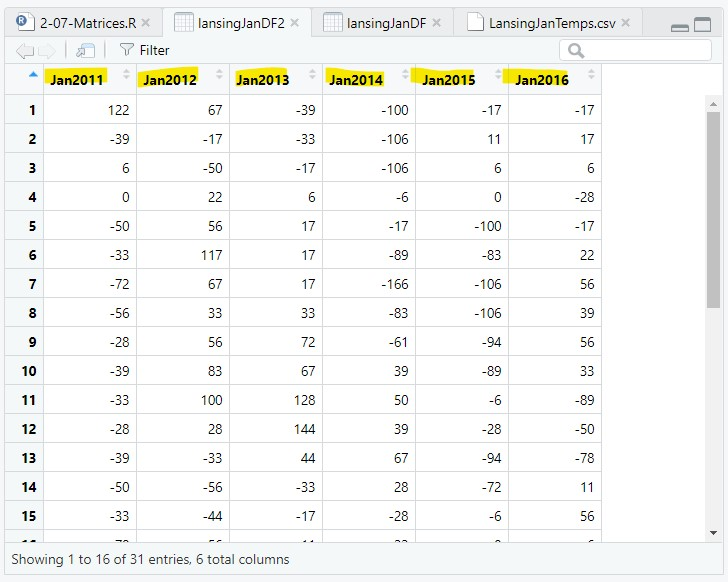
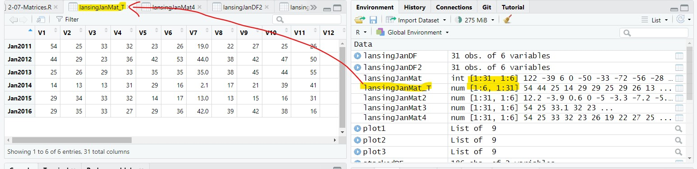

Datetime Objects
Binding and Sampling
The script for the lesson is here (right-click, save link as... -- put in scripts folder).
The LansingJanTemps.csv (just left-click -- put in data folder)
Let's first look at the CSV file, LansingJanTemps.csv. The data in the CSV file was downloaded from the NOAA/NCDC website and contains the high temperature for every day in January from 2011 to 2016.
A CSV file is a text file that can be read by any text editor. We can look at the csv file by clicking on it in the Files tab of RStudio and choosing View File. The file will open in RStudio's file viewer:
Opening and viewing a CSV file in RStudio
The temperature values are in tenths of a Celsius degree and the columns have generic names -- we will deal with both of these issues later.
Let's open the CSV file and save it to a data frame, named lansingJanDF:
lansingJanDF = read.csv(file = "data/LansingJanTemps.csv");
lansingJanDF is a data frame with 6 columns of January temperatures from the years 2011-2016. The view of lansingJanDF looks very similar to the view of the CSV file the data came from (fig ##).
Viewing the data frame from the CSV file
Let's create a copy of the data frame so we can maintain the original data frame while making changes:
lansingJanDF2 = lansingJanDF;
We want to change the column names to something that has the years in it. It is possible to change the six column names to the six years 2011-2016 using the sequence 2011:2016:
colnames(lansingJanMat2) = 2011:2016;
But, it is not recommended to start a column name with a number. Column names are essentially variable names and variable names cannot start with a number. R does allow you to start a column name with a number, but there are problems with this that are beyond the scope of this lesson.
To avoid problems, you should always use variable naming standards for column names in a dataframe even though R does not enforce this.
As a reminder, the variable naming rules are:
We are going to name the columns Jan2011, Jan2012... using paste() to create the six column names:
colnames(lansingJanMat2) = paste("Jan", 2011:2016, sep="");
Note: we needed to set sep="", otherwise there would be a space in the name

Changing the column names -- make sure column names follow the same rules as variable names
A data frame is a two dimensional data structure that is a collection of related vectors (i.e., columns). For instance, the weatherData data frame used in previous lessons had different types of weather data (columns) collected every day (rows).
Data frames, by design, have columns that hold different types of data. The weather data from previous lessons had temperature columns, humidity columns, precipitation columns, etc..
However, in this lesson, we have a data frame where all the columns are the same type of value (temperatures) and we will want to perform calculations across rows, columns, and the whole structure. This cannot be done with a data frame, but it can be done with a matrix.
A matrix is a two-dimensional vector that is similar to a two-dimensional data frame except that all the columns are the same type of value.
We can convert a data frame directly into a matrix using as.matrix():
lansingJanMat = as.matrix(lansingJanDF2);
In the Environment tab, the matrix is placed in the Data section (like a data frame), but is presented as a two-dimensional vector (31 rows by 6 columns):
lansingJanMat: num [1:31, 1:6] 122 -39 6 0 -50 -33 ...
And, if you double-click on the matrix, it will show up in a Viewer tab and look like a data frame:
Matrices and data frame in the Environment -- double-clicking on a matrix opens it in a Viewer tab
A matrix has two advantages over a data frame:
If you are dealing with large data that is all of the same type, then it is best to use a matrix.
The temperature data in the lansingJanMat is in units of tenths of Celsius (this author does not know why NOAA/NCDC chose to store the data this way). Let's convert this to Fahrenheit.
Because this is a matrix, we can execute mathematical operations on all values at once -- just like a vector (remember, a matrix is a two-dimensional vector).
In order, I am going to:
We are going to perform three operations on the matrix and show the results of the operations on the first 10 values of the matrix.
Note: I create a new matrices to maintain the old versions of the matrix, but this is not necessary -- you could keep saving the results to lansingJanMat.
The first 10 values in the matrix are:
> lansingJanMat[1:10]
[1] 122 -39 6 0 -50 -33 -72 -56 -28 -39
# Step 1) Divide by 10 to get units from tenths of Celsius to Celsius
lansingJanMat2 = lansingJanMat / 10;
> lansingJanMat2[1:10]
[1] 12.2 -3.9 0.6 0.0 -5.0 -3.3 -7.2 -5.6 -2.8 -3.9
# Step 2) Converting from Celsius to Fahrenheit
lansingJanMat3 = (9/5) * lansingJanMat2 + 32;
> lansingJanMat3[1:10]
[1] 53.96 24.98 33.08 32.00 23.00 26.06 19.04 21.92 26.96 24.98
# Step 3) Set the number of significant digits to 2
lansingJanMat4 = signif(x=lansingJanMat3, digits=2);
> lansingJanMat4[1:10]
[1] 54 25 33 32 23 26 19 22 27 25
Displaying the first ten temperature values of the 4 matrices

The final matrix in the Viewer tab
We can also apply statistical functions to the whole matrix. For instance, we can find the mean and standard deviation of all values in the matrix:
meanAllTemps = mean(lansWeatherMat4);
> meanAllTemps
[1] 29.68495> sdAllTemps
[1] 10.60749
If we just want to work with part of the data in a matrix, then we need to subset the matrix. Similar to using bracket notation, [x], in one-dimensional vectors, we can use two-dimensional bracket [x,y] notation to subset a matrix.
In this notation, x represents the row numbers to subset and y represents the column numbers to subset.
If x is not given, it means take all rows (i.e., do not subset the rows). So, the following will find the mean of all rows in column 3 (i.e., all values in the year 2013):
meanJan2013 = mean(lansWeatherMat[ ,3]);
> lansingJanMat4[,3]
[1] 25 26 29 33 35 35 35 38 45 44 55 58 40 26 29 34 33 35 45 41
[21] 15 10 17 16 20 27 30 43 57 56 27
> meanJan2013
[1] 34.16129
Console output for the matrix subsetted by row 3 and the mean of this subset
If y is not given, it means take all columns (i.e., do not subset the columns). So, the following will find the mean of all columns in row 17 (i.e., the Jan 17th value for every year):
meanJan17 = mean(lansWeatherMat[17,]);
> lansingJanMat4[17,]
Jan2011 Jan2012 Jan2013 Jan2014 Jan2015 Jan2016
30 40 33 30 45 26> meanJan17
[1] 34
Console output for the matrix subsetted by column 17 and the mean of this subset
And you can use sequences for both x and y to get a two-dimensional subset of the matrix. The following will get the mean of the 10th through 19th (Jan 10-19) values of the first three years (2011, 2012, 2013):
meanJanPart = mean(lansingJanMat4[10:19, 1:3]);
> lansingJanMat4[10:19, 1:3]
Jan2011 Jan2012 Jan2013
[1,] 25 47 44
[2,] 26 50 55
[3,] 27 37 58
[4,] 25 26 40
[5,] 23 22 26
[6,] 26 24 29
[7,] 18 42 34
[8,] 30 40 33
[9,] 34 24 35
[10,] 22 27 45> meanJanPart
[1] 33.13333
Console output for the matrix subsetted by rows 10-19 and columns 1-3, and the mean of this subset
Finally, you can create more complicated sequences to subset the matrix. The following will find the mean of all even days on odd years.
Since the subsetting is getting more complex, it is best to first create variables that hold the subset values:
evenDays = seq(from=2, to=31, by=2);
oddYears = c(1,3,5);
and then use the variables in the bracket notation:
meanJanEvenOdd = mean(lansingJanMat4[evenDays, oddYears]);
> lansingJanMat4[evenDays, oddYears]
Jan2011 Jan2013 Jan2015
[1,] 25 26 34
[2,] 32 33 32
[3,] 26 35 17
[4,] 22 38 13
[5,] 25 44 16
[6,] 27 58 27
[7,] 23 26 19
[8,] 18 34 32
[9,] 34 35 39
[10,] 23 41 31
[11,] 16 10 30
[12,] 29 16 37
[13,] 29 27 26
[14,] 29 43 31
[15,] 24 56 23> meanJanEvenOdd
[1] 29.13333
Console output for the matrix subsetted by even rows and odd columns 1-3, and the mean of this subset
In the previous examples, the rows represent days and the columns represent years. We could easily reverse the matrix so that the rows represent the years and the columns represent the days. We do this using the transpose, t(), function:
lansingJanMat_T = t(lansingJanMat4);
The resulting matrix has 6 row and 31 columns with temperature values for the months going horizontally across the matrix instead of vertically down:

The transpose matrix (reversing the rows and columns)
One use of a transpose matrix is that you transpose a matrix when taking the dot (scalar) product of two matrices.
Earlier, we found the mean of a single column of temperature values (fig ##). Often, we want to find the mean of every column. We could just repeat the same line 6 times, once for each column:
meanJan2011 = mean(lansWeatherMat[ ,1]);
meanJan2012 = mean(lansWeatherMat[ ,2]);
meanJan2013 = mean(lansWeatherMat[ ,3]);...
But, this is not an efficient way to code and would become more burdensome as the number of columns increases.
There are two better ways to cycle through each column and get the means:
A for loop can be used to cycle through, and calculate the mean of, each column in the matrix. Since there are multiple mean values that you are calculating, you need to save the mean values to one vector.
The vector needs to be created before the for loop and assigned values during the for loop. After, the for loop the vector will have the same number of values as the matrix has columns (i.e., 6).
# vector that holds the 6 yearly mean values
yearlyMean = c();
# cycle through the six column and find the mean of the temperature values
for(i in 1:6)
{
# get the mean of all values in column i and save it to yearlyMean[i]
yearlyMean[i] = mean(lansingJanMat4[,i]);
}
The yearlyMean vector has 6 values, representing the mean for each of the 6 years:
> yearlyMean
[1] 25.61290 35.77419 34.16129 23.36774 27.45161 31.74194
apply() is a useful, if somewhat archaic, function in base R that allows you to apply a statistical or mathematical function for every row or column in a matrix.
apply() takes three arguments:
So, to get the mean of all columns in the lansingJanMat4 matrix:
yearlyMean2 = apply(lansingJanMat4, MARGIN=2, FUN=mean);
And, yearlyMean2 is a vector with 6 value, the same as yearlyMean above.
> yearlyMean2
Jan2011 Jan2012 Jan2013 Jan2014 Jan2015 Jan2016
25.61290 35.77419 34.16129 23.36774 27.45161 31.74194
yearlyMean2 is formatted differently than yearlyMean -- yearlyMean2 is a named variable. The distinction is something we will look more into in the lesson on Objects in R.
We are going to save lansingJanMat4 to a CSV file so we can use it in the next lesson and avoid the hassle of reformatting the original CSV file:
write.csv(x=lansWeatherMat, file = "data/LansingJanTempsFixed.csv",
row.names = FALSE);
This will put a CSV file named LansingJanTempsFixed.csv in the data folder of your Project Folder.
If you have any questions regarding this application, feel free to email them to the instructor here. You can attach the whole Project Folder as a zipped file.
1) You are given a data frame with three columns:
Is it best to convert the data frame into matrix? In comments in your script for the lesson give 1 reason why it is best and one reason why it is not.
2) Find:
3) Using for loops, find the mean value for each day in January (i.e., mean of the rows)
4) Using apply(), find the mean value for each day in January (i.e., mean of the rows)
5) Find the mean temperature of every 4th day in the years 2011, 2014, and 2016.
6) Convert the temperature matrix so that it show how many degrees the temperature was above or below freezing on the Fahrenheit scale. So, 25 would become -7, and 60 would become 38.
Save you script file as app2-07.r in the scripts folder of your RStudio Project for the class.
Answer the following in comments inside your application script:
In March 2019, the line of code to get a column of temperature values from the lansWeather11Data dataframe (and the other 5 years) changed from
lansWeather11Val = lansWeather11Data [, "value"];
to
lansWeather11Val = lansWeather11Data$value;
The reason for this change is that the NOAA/NCDC database starting sending data in tibbles instead of dataframes. Tibbles are designed to be a more modern take on the dataframe, basically taking the lessons from decades on dataframe usage to create a better dataframe.
Tibbles are essentially the tidyverse version of a data frame and they supposedly improve on the data frame.
But, one difference is that in a data frame the three following lines all function exactly the same – they each take the column value from the data frame lw11Data and save it to a vector called temps:
temps=lw11Data$value
temps=lw11Data[, "value"]
temps=lw11Data[["value"]]
However, in a tibble, the following line saves the column value into a new 1 column tibble called temps.
temps=lw11Data[,"value"]
In other words, temps is not a vector, hence the error.
These two lines work the same in tibbles and data frames:
temps=lw11Data$value
temps=lw11Data[[“value”]]